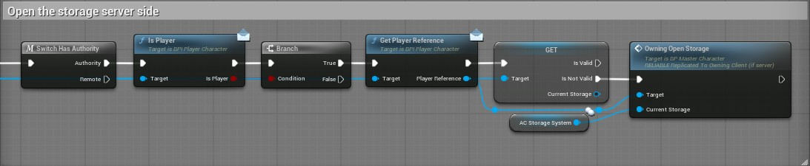

🚀 How to create a storage ?¶
1. Add the storage component¶
In your Blueprint, add the component AC_StorageSystem.
2. Implement the storage interface¶
- Add the interface
BPI_StorageManagerto your Blueprint. - Implement the interface function
GetStorageComponent. - Return your
AC_StorageSystemcomponent in the return value.
This works like the vital manager interface.
3. Open the storage UI¶
To open the storage, call the function Owning_OpenStorage from the server side.

Tip
Make sure your Blueprint is properly set up on the server to allow multiplayer interaction with storage.